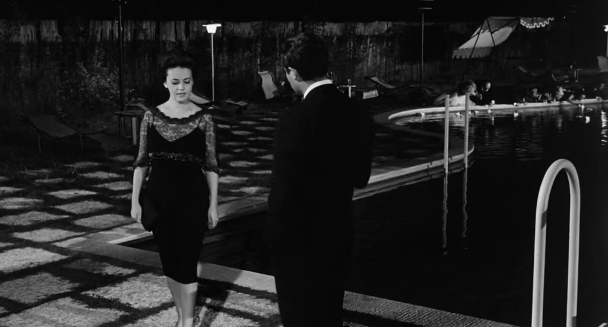

Image context
Search input:
In a language where writing is ideographic and not phonetic, Jullien reinforces that direct translation risks depriving the original content of its coherence. He continues by warning that translation : will provide no more than a facsimile, more or less distorted, of our concepts. You have still not cleared a way, built a threshold, for entering. This offers another caution against treating one modality as a field to be converted into another, in our case images and text. Translation in Jullien's terms either leaves the other modality at a distance, or encloses it within our own terms. Either way, one remains outside.
Search mode: words Targeting: 1.5×
Selected image

Region necessity — indiscreet, adagio, boulevard, interlude, jealous, nightdress, rendezvous, velvet, splendor
All regions
Region cleared — ['superstructure', 'hauler', 'vortex', 'shuttle', 'covenant', 'reach', 'ascend', 'orbiting', 'spaceship', 'docking'], ['programmed', 'reach', 'docking', 'hauler', 'ascend', 'orbiting', 'vortex', 'spaceship', 'shuttle', 'superstructure', 'telegenic'], ['hypothetical', 'republic', 'covenant', 'variant', 'telegenic'], ['booster', 'vortex', 'fusion', 'circling', 'ascend', 'orbiting', 'rocket'], ['circling', 'telegenic', 'hierarchy', 'chancellor', 'republic', 'docking', 'ascend', 'superstructure', 'chamber'], ['docking', 'booster', 'automated', 'spaceship', 'shuttle', 'programmed', 'telegenic', 'aloft', 'orbiting', 'automaton', 'undercarriage'], ['shuttle', 'rocket', 'aloft', 'moon', 'messier', 'spaceship', 'orbiting'], ['variant', 'fusion', 'ascend', 'orbiting', 'hypothetical'], ['complicated', 'spaceship', 'automated', 'console', 'reach', 'programmed'], ['reach', 'cosmic', 'orbiting', 'spaceship', 'moon', 'vortex', 'swirled', 'fluid'], ['telegenic', 'spaceship', 'chamber', 'incorporated', 'automaton', 'orbiting', 'programmed'], ['spaceship', 'automated', 'console', 'programmed', 'complicated', 'telegenic'], ['telegenic', 'embedded', 'covenant', 'incorporated'], ['implanting', 'covenant', 'orbiting', 'telegenic', 'programmed', 'hand'], ['messier', 'spaceship', 'expanding', 'cosmic', 'vortex', 'orbiting', 'covenant'], ['reach', 'ascend', 'orbiting', 'hand', 'fusion', 'vortex'], ['spaceship', 'evolved', 'superstructure', 'ascend', 'reach'], ['covenant', 'embedded', 'telegenic', 'programmed', 'implanting', 'spaceship'], ['orbiting', 'altimeter', 'spaceship', 'booster', 'differential', 'shuttle', 'circuit'], ['hauler', 'superstructure', 'docking', 'spaceship', 'differential', 'undercarriage', 'orbiting', 'shuttle'] assets/film_frames_300/Dune_-_David_Lynch_(1984)__4e09ef2ea7__t06834.000__tc01-53-54.000__w300.jpg — ['superstructure', 'hauler', 'vortex', 'shuttle', 'covenant', 'reach', 'ascend', 'orbiting', 'spaceship', 'docking']assets/film_frames_300/2001_A_Space_Odyssey_-_Stanley_Kubrick_(1968)__2d3eb1f66e__t02360.000__tc00-39-20.000__w300.jpg — ['programmed', 'reach', 'docking', 'hauler', 'ascend', 'orbiting', 'vortex', 'spaceship', 'shuttle', 'superstructure', 'telegenic']assets/film_frames_300/Dune_-_David_Lynch_(1984)__e2c3a865ad__t07230.000__tc02-00-30.000__w300.jpg — ['hypothetical', 'republic', 'covenant', 'variant', 'telegenic']assets/film_frames_300/Megalopolis_-_Francis_Ford_Coppola_(2024)__474d8e8521__t06029.000__tc01-40-29.000__w300.jpg — ['booster', 'vortex', 'fusion', 'circling', 'ascend', 'orbiting', 'rocket']assets/film_frames_300/12_Monkeys_-_Terry_Gilliam_(1995)__407a66e0a2__t04450.000__tc01-14-10.000__w300.jpg — ['circling', 'telegenic', 'hierarchy', 'chancellor', 'republic', 'docking', 'ascend', 'superstructure', 'chamber']assets/film_frames_300/2001_A_Space_Odyssey_-_Stanley_Kubrick_(1968)__68ba27cdab__t04670.000__tc01-17-50.000__w300.jpg — ['docking', 'booster', 'automated', 'spaceship', 'shuttle', 'programmed', 'telegenic', 'aloft', 'orbiting', 'automaton', 'undercarriage']assets/film_frames_300/Dr._Strangelove_or_How_I_Learned_to_Stop_Worrying_and_Love_the_Bomb_-_Stanley_Kubrick_(196__fe32ecd547__t04520.000__tc01-15-20.000__w300.jpg — ['shuttle', 'rocket', 'aloft', 'moon', 'messier', 'spaceship', 'orbiting']assets/film_frames_300/Kikujiro_-_Takeshi_Kitano_(1999)__ad7b2ee228__t02520.000__tc00-42-00.000__w300.jpg — ['variant', 'fusion', 'ascend', 'orbiting', 'hypothetical']assets/film_frames_300/2001_A_Space_Odyssey_-_Stanley_Kubrick_(1968)__0827a5c882__t04856.000__tc01-20-56.000__w300.jpg — ['complicated', 'spaceship', 'automated', 'console', 'reach', 'programmed']assets/film_frames_300/Melancholia_-_Lars_von_Trier_(2011)__ee06ef3e00__t05160.000__tc01-26-00.000__w300.jpg — ['reach', 'cosmic', 'orbiting', 'spaceship', 'moon', 'vortex', 'swirled', 'fluid']assets/film_frames_300/2001_A_Space_Odyssey_-_Stanley_Kubrick_(1968)__69d63fe482__t04051.000__tc01-07-31.000__w300.jpg — ['telegenic', 'spaceship', 'chamber', 'incorporated', 'automaton', 'orbiting', 'programmed']assets/film_frames_300/2001_A_Space_Odyssey_-_Stanley_Kubrick_(1968)__0017b3bf75__t04843.000__tc01-20-43.000__w300.jpg — ['spaceship', 'automated', 'console', 'programmed', 'complicated', 'telegenic']assets/film_frames_300/Broken_Embraces_(Los_abrazos_rotos)_-_Pedro_Almodvar_(2009)__a2b0d2070c__t02903.000__tc00-48-23.000__w300.jpg — ['telegenic', 'embedded', 'covenant', 'incorporated']assets/film_frames_300/Brazil_-_Terry_Gilliam_(1985)__070d0950af__t03240.000__tc00-54-00.000__w300.jpg — ['implanting', 'covenant', 'orbiting', 'telegenic', 'programmed', 'hand']assets/film_frames_300/Dune_-_David_Lynch_(1984)__7b17757823__t00729.000__tc00-12-09.000__w300.jpg — ['messier', 'spaceship', 'expanding', 'cosmic', 'vortex', 'orbiting', 'covenant']assets/film_frames_300/Dune_-_David_Lynch_(1984)__2b3fb2ce53__t06860.000__tc01-54-20.000__w300.jpg — ['reach', 'ascend', 'orbiting', 'hand', 'fusion', 'vortex']assets/film_frames_300/Megalopolis_-_Francis_Ford_Coppola_(2024)__f9d465a6ed__t07700.000__tc02-08-20.000__w300.jpg — ['spaceship', 'evolved', 'superstructure', 'ascend', 'reach']assets/film_frames_300/Brazil_-_Terry_Gilliam_(1985)__001576fb2a__t02183.000__tc00-36-23.000__w300.jpg — ['covenant', 'embedded', 'telegenic', 'programmed', 'implanting', 'spaceship']assets/film_frames_300/Dr._Strangelove_or_How_I_Learned_to_Stop_Worrying_and_Love_the_Bomb_-_Stanley_Kubrick_(196__f0d1ed7c98__t05220.000__tc01-27-00.000__w300.jpg — ['orbiting', 'altimeter', 'spaceship', 'booster', 'differential', 'shuttle', 'circuit']assets/film_frames_300/2001_A_Space_Odyssey_-_Stanley_Kubrick_(1968)__c10f9fac4b__t02960.000__tc00-49-20.000__w300.jpg — ['hauler', 'superstructure', 'docking', 'spaceship', 'differential', 'undercarriage', 'orbiting', 'shuttle']Region dame — ['valor', 'training', 'trained', 'gallantry', 'recruit', 'uniformed', 'recruiting', 'rank'], ['uniformed', 'recruiting', 'rank', 'vet', 'gallantry', 'recruit', 'training', 'trained', 'valor'], ['ammo', 'disarm', 'targeted', 'ballistics', 'training', 'firefight'], ['disarm', 'training', 'firefight', 'warfare'], ['invaded', 'warfare', 'uniformed', 'recruiting', 'valor', 'firefight', 'pacifism', 'conflict', 'gallantry'], ['dogfight', 'targeted', 'ballistic', 'recruit', 'recruiting', 'firefight'], ['uniformed', 'recruiting', 'escorted', 'pacifism', 'conflict', 'gallantry'], ['conflict', 'slumlord', 'recruiting', 'looting', 'bombing', 'humanitarian'], ['firefight', 'recruiting', 'ballistic', 'conflict', 'gallantry', 'recruit', 'dogfight'], ['looting', 'humanitarian', 'conflict', 'recruiting', 'training'], ['gallantry', 'recruit', 'uniformed', 'recruiting', 'escorted', 'training', 'valor'], ['prepared', 'training', 'firefight', 'uniformed', 'recruiting', 'gallantry', 'recruit'], ['uniformed', 'recruiting', 'prepared', 'pow', 'training', 'firefight', 'gallantry', 'recruit'], ['remember', 'rank', 'valor', 'fascist', 'uniformed', 'recruiting'], ['valor', 'remember', 'rank', 'uniformed', 'recruiting'], ['uniformed', 'ballistics', 'recruiting', 'conflict', 'gallantry', 'recruit', 'training', 'firefight', 'dogfight', 'mortar', 'valor'], ['uniformed', 'recruiting', 'conflict', 'recruit', 'bombing'], ['remember', 'rank', 'uniformed', 'recruiting', 'fascist'], ['remember', 'rank', 'fascist', 'uniformed', 'recruiting'], ['training', 'uniformed', 'pacifism', 'conflict', 'disarm'] assets/film_frames_300/Full_Metal_Jacket_-_Stanley_Kubrick_(1987)__a11f1c14bf__t01470.000__tc00-24-30.000__w300.jpg — ['valor', 'training', 'trained', 'gallantry', 'recruit', 'uniformed', 'recruiting', 'rank']assets/film_frames_300/Full_Metal_Jacket_-_Stanley_Kubrick_(1987)__4a2cd28f56__t01550.000__tc00-25-50.000__w300.jpg — ['uniformed', 'recruiting', 'rank', 'vet', 'gallantry', 'recruit', 'training', 'trained', 'valor']assets/film_frames_300/Full_Metal_Jacket_-_Stanley_Kubrick_(1987)__26053c8dd8__t01325.000__tc00-22-05.000__w300.jpg — ['ammo', 'disarm', 'targeted', 'ballistics', 'training', 'firefight']assets/film_frames_300/Full_Metal_Jacket_-_Stanley_Kubrick_(1987)__de3bd101f4__t05640.000__tc01-34-00.000__w300.jpg — ['disarm', 'training', 'firefight', 'warfare']assets/film_frames_300/Full_Metal_Jacket_-_Stanley_Kubrick_(1987)__ee86f40902__t04068.000__tc01-07-48.000__w300.jpg — ['invaded', 'warfare', 'uniformed', 'recruiting', 'valor', 'firefight', 'pacifism', 'conflict', 'gallantry']assets/film_frames_300/The_Departed_-_Martin_Scorsese_(2006)__6deabbcb9f__t06456.000__tc01-47-36.000__w300.jpg — ['dogfight', 'targeted', 'ballistic', 'recruit', 'recruiting', 'firefight']assets/film_frames_300/There_Will_Be_Blood_-_Paul_Thomas_Anderson_(2007)__6664791c45__t03452.000__tc00-57-32.000__w300.jpg — ['uniformed', 'recruiting', 'escorted', 'pacifism', 'conflict', 'gallantry']assets/film_frames_300/Full_Metal_Jacket_-_Stanley_Kubrick_(1987)__db8dbd4f6c__t05093.000__tc01-24-53.000__w300.jpg — ['conflict', 'slumlord', 'recruiting', 'looting', 'bombing', 'humanitarian']assets/film_frames_300/Apocalypse_Now_-_Francis_Ford_Coppola_(1979)__75256bbcd5__t02194.000__tc00-36-34.000__w300.jpg — ['firefight', 'recruiting', 'ballistic', 'conflict', 'gallantry', 'recruit', 'dogfight']assets/film_frames_300/La_Haine_-_Mathieu_Kassovitz_(1995)__9ca8efa457__t00916.000__tc00-15-16.000__w300.jpg — ['looting', 'humanitarian', 'conflict', 'recruiting', 'training']assets/film_frames_300/Full_Metal_Jacket_-_Stanley_Kubrick_(1987)__69ea611e92__t00560.000__tc00-09-20.000__w300.jpg — ['gallantry', 'recruit', 'uniformed', 'recruiting', 'escorted', 'training', 'valor']assets/film_frames_300/Full_Metal_Jacket_-_Stanley_Kubrick_(1987)__7bd37e427e__t02050.000__tc00-34-10.000__w300.jpg — ['prepared', 'training', 'firefight', 'uniformed', 'recruiting', 'gallantry', 'recruit']assets/film_frames_300/Full_Metal_Jacket_-_Stanley_Kubrick_(1987)__e53910bdcc__t02051.000__tc00-34-11.000__w300.jpg — ['uniformed', 'recruiting', 'prepared', 'pow', 'training', 'firefight', 'gallantry', 'recruit']assets/film_frames_300/Pulp_Fiction_-_Quentin_Tarantino_(1994)__952d36522a__t03886.000__tc01-04-46.000__w300.jpg — ['remember', 'rank', 'valor', 'fascist', 'uniformed', 'recruiting']assets/film_frames_300/Pulp_Fiction_-_Quentin_Tarantino_(1994)__b8c2759882__t04072.000__tc01-07-52.000__w300.jpg — ['valor', 'remember', 'rank', 'uniformed', 'recruiting']assets/film_frames_300/Full_Metal_Jacket_-_Stanley_Kubrick_(1987)__9ac960de41__t01191.000__tc00-19-51.000__w300.jpg — ['uniformed', 'ballistics', 'recruiting', 'conflict', 'gallantry', 'recruit', 'training', 'firefight', 'dogfight', 'mortar', 'valor']assets/film_frames_300/Once_Upon_a_Time_in_Anatolia_-_Nuri_Bilge_Ceylan_(2011)__af4e12cb6a__t00732.000__tc00-12-12.000__w300.jpg — ['uniformed', 'recruiting', 'conflict', 'recruit', 'bombing']assets/film_frames_300/Elvis_-_Baz_Luhrmann_(2022)__a5ea91c3e0__t03300.000__tc00-55-00.000__w300.jpg — ['remember', 'rank', 'uniformed', 'recruiting', 'fascist']assets/film_frames_300/Elvis_-_Baz_Luhrmann_(2022)__a5ea91c3e0__t03300.000__tc00-55-00.000__w300.jpg — ['remember', 'rank', 'fascist', 'uniformed', 'recruiting']assets/film_frames_300/Full_Metal_Jacket_-_Stanley_Kubrick_(1987)__fa19c8ccf8__t01290.000__tc00-21-30.000__w300.jpg — ['training', 'uniformed', 'pacifism', 'conflict', 'disarm']Region depriving — ['benedictine', 'inquisition', 'sheathed', 'evensong', 'sackcloth', 'friar', 'stronghold', 'fellowship', 'venerable', 'dungeon', 'abbey', 'monastery', 'grail', 'medieval'], ['grievous', 'fellowship', 'venerable', 'dungeon', 'abbey', 'monastery', 'grail', 'evensong', 'heretic', 'sorcerer', 'benedictine', 'inquisition', 'friar'], ['helm', 'fellowship', 'catacomb', 'grievous', 'council', 'maul', 'grail', 'halberd', 'dungeon', 'got', 'sheathed', 'sorcerer', 'stronghold', 'stole', 'friar'], ['medieval', 'got', 'helm', 'scholar', 'fellowship', 'council', 'maul', 'stole'], ['dungeon', 'abbey', 'got', 'halberd', 'fellowship', 'stronghold', 'castle', 'sorcerer', 'tends'], ['evensong', 'heretic', 'inquisition', 'scripture', 'trapdoor', 'scholar', 'catacomb', 'dungeon', 'monastery'], ['dungeon', 'got', 'fellowship', 'stronghold', 'castle', 'tends'], ['heretic', 'sorcerer', 'elf', 'warden', 'grail', 'medieval', 'halberd', 'helm', 'fellowship', 'crusader', 'heretical'], ['grail', 'medieval', 'halberd', 'warden', 'helm', 'fellowship', 'crusader', 'heretical', 'stronghold', 'elf'], ['hearth', 'friar', 'sorcerer', 'sackcloth', 'inquisition', 'chimed', 'dungeon', 'grail', 'halberd', 'trapdoor'], ['benedictine', 'seminary', 'evensong', 'abbey', 'monastery', 'rebuilding'], ['medieval', 'halberd', 'chimed', 'dungeon', 'helm', 'fellowship', 'catacomb', 'stronghold', 'alcove', 'hearth', 'inquisition'], ['dungeon', 'monastery', 'medieval', 'ruined', 'stronghold', 'castle'], ['fellowship', 'apostatizes', 'grail', 'medieval', 'monastery', 'got', 'apostasy', 'uncircumcised', 'infallibility', 'benedictine', 'sheathed', 'stole', 'schism'], ['stole', 'schism', 'sheathed', 'apostasy', 'uncircumcised', 'infallibility', 'benedictine', 'monastery', 'got', 'grail', 'medieval', 'fellowship', 'apostatizes'], ['monastery', 'friar', 'scripture', 'alcove', 'evensong', 'sackcloth', 'benedictine', 'inquisition', 'seminary'], ['helm', 'prophecy', 'grievous', 'council', 'maul', 'friar', 'patriarch', 'sorcerer'], ['helm', 'prophecy', 'fellowship', 'halberd', 'got', 'elf', 'benedictine', 'sorcerer', 'hearth', 'friar'], ['grievous', 'council', 'maul', 'benedictine', 'heretic', 'sorcerer', 'patriarch', 'tyrant', 'friar'], ['stronghold', 'tyrant', 'inquisition', 'dungeon', 'got', 'grail', 'medieval', 'halberd', 'helm', 'fellowship'] assets/film_frames_300/The_Name_of_the_Rose_-_Jean-Jacques_Annaud_(1986)__02fcaa66cf__t02248.000__tc00-37-28.000__w300.jpg — ['benedictine', 'inquisition', 'sheathed', 'evensong', 'sackcloth', 'friar', 'stronghold', 'fellowship', 'venerable', 'dungeon', 'abbey', 'monastery', 'grail', 'medieval']assets/film_frames_300/The_Name_of_the_Rose_-_Jean-Jacques_Annaud_(1986)__8c25c1e642__t02120.000__tc00-35-20.000__w300.jpg — ['grievous', 'fellowship', 'venerable', 'dungeon', 'abbey', 'monastery', 'grail', 'evensong', 'heretic', 'sorcerer', 'benedictine', 'inquisition', 'friar']assets/film_frames_300/The_Name_of_the_Rose_-_Jean-Jacques_Annaud_(1986)__818754f433__t04766.000__tc01-19-26.000__w300.jpg — ['helm', 'fellowship', 'catacomb', 'grievous', 'council', 'maul', 'grail', 'halberd', 'dungeon', 'got', 'sheathed', 'sorcerer', 'stronghold', 'stole', 'friar']assets/film_frames_300/The_Name_of_the_Rose_-_Jean-Jacques_Annaud_(1986)__67642f5de3__t04960.000__tc01-22-40.000__w300.jpg — ['medieval', 'got', 'helm', 'scholar', 'fellowship', 'council', 'maul', 'stole']assets/film_frames_300/The_Name_of_the_Rose_-_Jean-Jacques_Annaud_(1986)__f2a3ca7602__t01877.000__tc00-31-17.000__w300.jpg — ['dungeon', 'abbey', 'got', 'halberd', 'fellowship', 'stronghold', 'castle', 'sorcerer', 'tends']assets/film_frames_300/The_Double_Life_of_Vronique_-_Krzysztof_Kielowski_(1991)__f246a2935a__t03468.000__tc00-57-48.000__w300.jpg — ['evensong', 'heretic', 'inquisition', 'scripture', 'trapdoor', 'scholar', 'catacomb', 'dungeon', 'monastery']assets/film_frames_300/The_Name_of_the_Rose_-_Jean-Jacques_Annaud_(1986)__d6c3054d0a__t01880.000__tc00-31-20.000__w300.jpg — ['dungeon', 'got', 'fellowship', 'stronghold', 'castle', 'tends']assets/film_frames_300/Ran_-_Akira_Kurosawa_(1985)__ccbe18dc75__t08374.000__tc02-19-34.000__w300.jpg — ['heretic', 'sorcerer', 'elf', 'warden', 'grail', 'medieval', 'halberd', 'helm', 'fellowship', 'crusader', 'heretical']assets/film_frames_300/Ran_-_Akira_Kurosawa_(1985)__aeafa9373e__t08324.000__tc02-18-44.000__w300.jpg — ['grail', 'medieval', 'halberd', 'warden', 'helm', 'fellowship', 'crusader', 'heretical', 'stronghold', 'elf']assets/film_frames_300/The_Name_of_the_Rose_-_Jean-Jacques_Annaud_(1986)__c6ab6dbf10__t03080.000__tc00-51-20.000__w300.jpg — ['hearth', 'friar', 'sorcerer', 'sackcloth', 'inquisition', 'chimed', 'dungeon', 'grail', 'halberd', 'trapdoor']assets/film_frames_300/Andrei_Rublev_-_Andrei_Tarkovsky_(1966)__3ac20a2d5e__t00340.000__tc00-05-40.000__w300.jpg — ['benedictine', 'seminary', 'evensong', 'abbey', 'monastery', 'rebuilding']assets/film_frames_300/The_Name_of_the_Rose_-_Jean-Jacques_Annaud_(1986)__cd4d30f86a__t00660.000__tc00-11-00.000__w300.jpg — ['medieval', 'halberd', 'chimed', 'dungeon', 'helm', 'fellowship', 'catacomb', 'stronghold', 'alcove', 'hearth', 'inquisition']assets/film_frames_300/The_Spirit_of_the_Beehive_-_Victor_Erice_(1973)__da726ce92d__t05290.000__tc01-28-10.000__w300.jpg — ['dungeon', 'monastery', 'medieval', 'ruined', 'stronghold', 'castle']assets/film_frames_300/The_Name_of_the_Rose_-_Jean-Jacques_Annaud_(1986)__2ff7866f8e__t01870.000__tc00-31-10.000__w300.jpg — ['fellowship', 'apostatizes', 'grail', 'medieval', 'monastery', 'got', 'apostasy', 'uncircumcised', 'infallibility', 'benedictine', 'sheathed', 'stole', 'schism']assets/film_frames_300/The_Name_of_the_Rose_-_Jean-Jacques_Annaud_(1986)__2ff7866f8e__t01870.000__tc00-31-10.000__w300.jpg — ['stole', 'schism', 'sheathed', 'apostasy', 'uncircumcised', 'infallibility', 'benedictine', 'monastery', 'got', 'grail', 'medieval', 'fellowship', 'apostatizes']assets/film_frames_300/The_Name_of_the_Rose_-_Jean-Jacques_Annaud_(1986)__bd59fd6b60__t00344.000__tc00-05-44.000__w300.jpg — ['monastery', 'friar', 'scripture', 'alcove', 'evensong', 'sackcloth', 'benedictine', 'inquisition', 'seminary']assets/film_frames_300/The_Name_of_the_Rose_-_Jean-Jacques_Annaud_(1986)__60768ed60f__t00308.000__tc00-05-08.000__w300.jpg — ['helm', 'prophecy', 'grievous', 'council', 'maul', 'friar', 'patriarch', 'sorcerer']assets/film_frames_300/The_Name_of_the_Rose_-_Jean-Jacques_Annaud_(1986)__ab713004bc__t00859.000__tc00-14-19.000__w300.jpg — ['helm', 'prophecy', 'fellowship', 'halberd', 'got', 'elf', 'benedictine', 'sorcerer', 'hearth', 'friar']assets/film_frames_300/The_Name_of_the_Rose_-_Jean-Jacques_Annaud_(1986)__889797abbb__t00271.000__tc00-04-31.000__w300.jpg — ['grievous', 'council', 'maul', 'benedictine', 'heretic', 'sorcerer', 'patriarch', 'tyrant', 'friar']assets/film_frames_300/The_Name_of_the_Rose_-_Jean-Jacques_Annaud_(1986)__8d35527e23__t06479.000__tc01-47-59.000__w300.jpg — ['stronghold', 'tyrant', 'inquisition', 'dungeon', 'got', 'grail', 'medieval', 'halberd', 'helm', 'fellowship']Region element — ['administration', 'zenith', 'overseer', 'dome', 'bureaucrat', 'enterprise', 'astrophysicist', 'statesmanlike', 'candidate', 'consensus'], ['candidate', 'consensus', 'worldview', 'astrophysicist', 'statesmanlike', 'administration', 'conspiracy', 'individualism'], ['enterprise', 'uniformity', 'conference', 'bureaucrat', 'overseer', 'individualism', 'spaced', 'consensus', 'bureaucracy', 'podium'], ['manned', 'symmetry', 'robot', 'zenith', 'curator', 'spaced'], ['radar', 'conspiracy', 'distributed', 'consensus', 'worldview', 'analysis', 'astrologist', 'projection', 'astrophysicist', 'forecast'], ['symmetry', 'bureaucracy', 'uniformity', 'conference'], ['curator', 'congressman', 'stringer', 'daffy', 'shrug'], ['elected', 'mp', 'bureaucrat', 'statesmanlike', 'candidate', 'correspondent', 'republican'], ['administration', 'elected', 'congressman', 'statesmanlike', 'candidate', 'correspondent', 'republican'], ['five', 'inciting', 'individualism', 'ministry'], ['five', 'conducting', 'inciting', 'candidate', 'individualism'], ['uniformity', 'multitude', 'individualism', 'quadrangle', 'conducting'], ['republican', 'candidate', 'shrug', 'statesmanlike', 'congressman', 'mp', 'bureaucrat', 'stringer'], ['radar', 'conspiracy', 'projection', 'consensus', 'worldview', 'astrologist', 'astrophysicist', 'forecast'], ['enterprise', 'spaced', 'solving', 'astrophysicist', 'mission', 'manned'], ['multitude', 'individualism', 'uniformity', 'quadrangle', 'conducting'], ['ministry', 'conspiracy', 'analysis', 'astrophysicist'], ['republican', 'daffy', 'statesmanlike', 'congressman', 'administration'], ['reinstall', 'bureaucracy', 'zenith', 'curator', 'enterprise', 'solving'], ['bureaucracy', 'podium', 'consensus', 'conference', 'distributed', 'enterprise'] assets/film_frames_300/Dr._Strangelove_or_How_I_Learned_to_Stop_Worrying_and_Love_the_Bomb_-_Stanley_Kubrick_(196__07861fe8a1__t03003.000__tc00-50-03.000__w300.jpg — ['administration', 'zenith', 'overseer', 'dome', 'bureaucrat', 'enterprise', 'astrophysicist', 'statesmanlike', 'candidate', 'consensus']assets/film_frames_300/Dr._Strangelove_or_How_I_Learned_to_Stop_Worrying_and_Love_the_Bomb_-_Stanley_Kubrick_(196__4b890843c7__t05277.000__tc01-27-57.000__w300.jpg — ['candidate', 'consensus', 'worldview', 'astrophysicist', 'statesmanlike', 'administration', 'conspiracy', 'individualism']assets/film_frames_300/2001_A_Space_Odyssey_-_Stanley_Kubrick_(1968)__c4bcb55697__t02520.000__tc00-42-00.000__w300.jpg — ['enterprise', 'uniformity', 'conference', 'bureaucrat', 'overseer', 'individualism', 'spaced', 'consensus', 'bureaucracy', 'podium']assets/film_frames_300/2001_A_Space_Odyssey_-_Stanley_Kubrick_(1968)__e896b5845e__t07980.000__tc02-13-00.000__w300.jpg — ['manned', 'symmetry', 'robot', 'zenith', 'curator', 'spaced']assets/film_frames_300/Dr._Strangelove_or_How_I_Learned_to_Stop_Worrying_and_Love_the_Bomb_-_Stanley_Kubrick_(196__f04169b25d__t02970.000__tc00-49-30.000__w300.jpg — ['radar', 'conspiracy', 'distributed', 'consensus', 'worldview', 'analysis', 'astrologist', 'projection', 'astrophysicist', 'forecast']assets/film_frames_300/The_Departed_-_Martin_Scorsese_(2006)__a37a969aa5__t00362.000__tc00-06-02.000__w300.jpg — ['symmetry', 'bureaucracy', 'uniformity', 'conference']assets/film_frames_300/Rear_Window_-_Alfred_Hitchcock_(1954)__da9fd0487c__t03584.000__tc00-59-44.000__w300.jpg — ['curator', 'congressman', 'stringer', 'daffy', 'shrug']assets/film_frames_300/Youth_-_Paolo_Sorrentino_(2015)__0b187a43f8__t00345.000__tc00-05-45.000__w300.jpg — ['elected', 'mp', 'bureaucrat', 'statesmanlike', 'candidate', 'correspondent', 'republican']assets/film_frames_300/Elvis_-_Baz_Luhrmann_(2022)__5b27436d2e__t05321.000__tc01-28-41.000__w300.jpg — ['administration', 'elected', 'congressman', 'statesmanlike', 'candidate', 'correspondent', 'republican']assets/film_frames_300/Dr._Strangelove_or_How_I_Learned_to_Stop_Worrying_and_Love_the_Bomb_-_Stanley_Kubrick_(196__eaa288acbf__t05282.000__tc01-28-02.000__w300.jpg — ['five', 'inciting', 'individualism', 'ministry']assets/film_frames_300/Dr._Strangelove_or_How_I_Learned_to_Stop_Worrying_and_Love_the_Bomb_-_Stanley_Kubrick_(196__2c5f415bdb__t05340.000__tc01-29-00.000__w300.jpg — ['five', 'conducting', 'inciting', 'candidate', 'individualism']assets/film_frames_300/The_Prime_of_Miss_Jean_Brodie_-_Ronald_Neame_(1969)__65fa8dda9c__t00223.000__tc00-03-43.000__w300.jpg — ['uniformity', 'multitude', 'individualism', 'quadrangle', 'conducting']/film-frame?film=%2FVolumes%2FPhD_drive2%2FVTFilms%2FThe.Big.Lebowski.1998.1080p.BrRip.x264.YIFY%2BHI.mp4&t=5855.000&w=1024 — ['republican', 'candidate', 'shrug', 'statesmanlike', 'congressman', 'mp', 'bureaucrat', 'stringer']assets/film_frames_300/Dr._Strangelove_or_How_I_Learned_to_Stop_Worrying_and_Love_the_Bomb_-_Stanley_Kubrick_(196__3018eb6e2d__t02969.000__tc00-49-29.000__w300.jpg — ['radar', 'conspiracy', 'projection', 'consensus', 'worldview', 'astrologist', 'astrophysicist', 'forecast']assets/film_frames_300/2001_A_Space_Odyssey_-_Stanley_Kubrick_(1968)__a9af193cd2__t02835.000__tc00-47-15.000__w300.jpg — ['enterprise', 'spaced', 'solving', 'astrophysicist', 'mission', 'manned']assets/film_frames_300/The_Prime_of_Miss_Jean_Brodie_-_Ronald_Neame_(1969)__b90e5d02c0__t00219.000__tc00-03-39.000__w300.jpg — ['multitude', 'individualism', 'uniformity', 'quadrangle', 'conducting']assets/film_frames_300/Megalopolis_-_Francis_Ford_Coppola_(2024)__2b1fc6a878__t04127.000__tc01-08-47.000__w300.jpg — ['ministry', 'conspiracy', 'analysis', 'astrophysicist']assets/film_frames_300/Babylon_-_Damien_Chazelle_(2022)__a6e92e9c74__t06697.000__tc01-51-37.000__w300.jpg — ['republican', 'daffy', 'statesmanlike', 'congressman', 'administration']assets/film_frames_300/Wall_Street_-_William_Oliver_Stone_(1987)__821ab9100d__t00999.000__tc00-16-39.000__w300.jpg — ['reinstall', 'bureaucracy', 'zenith', 'curator', 'enterprise', 'solving']assets/film_frames_300/2001_A_Space_Odyssey_-_Stanley_Kubrick_(1968)__ec1bcfe63d__t02674.000__tc00-44-34.000__w300.jpg — ['bureaucracy', 'podium', 'consensus', 'conference', 'distributed', 'enterprise']Region necessity — ['glamour', 'matrimony', 'remarriage', 'girdle', 'indiscreet', 'elegant', 'bosom', 'interlude', 'seduce'], ['indiscreet', 'interlude', 'glamour', 'model', 'seduction', 'lovelier', 'elegant', 'splendor', 'seduce', 'ravishing'], ['nightdress', 'remarriage', 'girdle', 'rendezvous', 'signor', 'bosom', 'matrimony', 'engagement', 'indiscreet'], ['nightdress', 'rendezvous', 'ravishing', 'sheila', 'hourglass', 'glamour', 'girdle', 'seduction', 'elegant', 'style', 'indiscreet'], ['lovelier', 'brooding', 'regard', 'engagement', 'interlude', 'jealous'], ['mingling', 'indiscreet', 'style', 'socialization', 'glamour', 'jealous'], ['silvering', 'adagio', 'smoothed', 'engagement', 'indiscreet', 'fluttery', 'seduction', 'regard'], ['indiscreet', 'adagio', 'boulevard', 'interlude', 'jealous', 'nightdress', 'rendezvous', 'velvet', 'splendor'], ['mingling', 'rendezvous', 'socialization', 'engagement', 'candid', 'lovelier'], ['accustomed', 'remarriage', 'indiscreet', 'hourglass', 'interlude', 'lovelier', 'bosom', 'seduce', 'girdle'], ['engagement', 'buying', 'indiscreet', 'interlude', 'matrimony'], ['glamour', 'lady', 'splendor', 'indiscreet', 'elegant', 'nightdress', 'sheila', 'model', 'interlude'], ['elegant', 'signor', 'indiscreet', 'nightdress', 'girdle', 'sculptress', 'lady', 'bosom'], ['interlude', 'lovelier', 'elegant', 'indiscreet', 'hourglass', 'style', 'onlooker', 'boulevard', 'adagio'], ['bosom', 'interlude', 'nightdress', 'adagio', 'elegant', 'indiscreet', 'velvet', 'jealous', 'brooding'], ['jealous', 'seduction', 'engagement', 'indiscreet', 'girdle', 'smoothed', 'nightdress', 'remarriage'], ['steed', 'matrimony', 'jealous', 'interlude', 'candid', 'engagement', 'indiscreet'], ['elegant', 'hourglass', 'indiscreet', 'silvering', 'matrimony', 'nightdress', 'inherit', 'remarriage', 'sculptress'], ['interlude', 'seduce', 'glamour', 'indiscreet', 'suggestible', 'seduction'], ['interlude', 'suggestible', 'seduce', 'glamour', 'seduction', 'indiscreet'] assets/film_frames_300/The_Killing_-_Stanley_Kubrick_(1956)__223100bb5e__t00815.000__tc00-13-35.000__w300.jpg — ['glamour', 'matrimony', 'remarriage', 'girdle', 'indiscreet', 'elegant', 'bosom', 'interlude', 'seduce']assets/film_frames_300/LAvventura_-_Michelangelo_Antonioni_(1960)__1e8429b185__t08095.000__tc02-14-55.000__w300.jpg — ['indiscreet', 'interlude', 'glamour', 'model', 'seduction', 'lovelier', 'elegant', 'splendor', 'seduce', 'ravishing']assets/film_frames_300/LAvventura_-_Michelangelo_Antonioni_(1960)__83b2e2f9a5__t01325.000__tc00-22-05.000__w300.jpg — ['nightdress', 'remarriage', 'girdle', 'rendezvous', 'signor', 'bosom', 'matrimony', 'engagement', 'indiscreet']assets/film_frames_300/La_Dolce_Vita_-_Federico_Fellini_(1960)__3168c3e96a__t09470.000__tc02-37-50.000__w300.jpg — ['nightdress', 'rendezvous', 'ravishing', 'sheila', 'hourglass', 'glamour', 'girdle', 'seduction', 'elegant', 'style', 'indiscreet']assets/film_frames_300/La_Notte_-_Michelangelo_Antonioni_(1961)__6d02f2a987__t05560.000__tc01-32-40.000__w300.jpg — ['lovelier', 'brooding', 'regard', 'engagement', 'interlude', 'jealous']assets/film_frames_300/LAvventura_-_Michelangelo_Antonioni_(1960)__5db9d423b7__t07220.000__tc02-00-20.000__w300.jpg — ['mingling', 'indiscreet', 'style', 'socialization', 'glamour', 'jealous']assets/film_frames_300/Psycho_-_Alfred_Hitchcock_(1960)__c8645a2888__t00323.000__tc00-05-23.000__w300.jpg — ['silvering', 'adagio', 'smoothed', 'engagement', 'indiscreet', 'fluttery', 'seduction', 'regard']assets/film_frames_300/La_Notte_-_Michelangelo_Antonioni_(1961)__693cba7118__t03919.000__tc01-05-19.000__w300.jpg — ['indiscreet', 'adagio', 'boulevard', 'interlude', 'jealous', 'nightdress', 'rendezvous', 'velvet', 'splendor']assets/film_frames_300/Lolita_-_Stanley_Kubrick_(1962)__ce242ec1be__t01353.000__tc00-22-33.000__w300.jpg — ['mingling', 'rendezvous', 'socialization', 'engagement', 'candid', 'lovelier']assets/film_frames_300/The_Killing_-_Stanley_Kubrick_(1956)__ed707ddf23__t00710.000__tc00-11-50.000__w300.jpg — ['accustomed', 'remarriage', 'indiscreet', 'hourglass', 'interlude', 'lovelier', 'bosom', 'seduce', 'girdle']assets/film_frames_300/Tokyo_Story_-_Yasujiro_Ozu_(1953)__51a869ce7c__t07833.000__tc02-10-33.000__w300.jpg — ['engagement', 'buying', 'indiscreet', 'interlude', 'matrimony']assets/film_frames_300/La_Notte_-_Michelangelo_Antonioni_(1961)__2154fc9e24__t04333.000__tc01-12-13.000__w300.jpg — ['glamour', 'lady', 'splendor', 'indiscreet', 'elegant', 'nightdress', 'sheila', 'model', 'interlude']assets/film_frames_300/Lolita_-_Stanley_Kubrick_(1962)__46192ebad2__t03758.000__tc01-02-38.000__w300.jpg — ['elegant', 'signor', 'indiscreet', 'nightdress', 'girdle', 'sculptress', 'lady', 'bosom']assets/film_frames_300/LAvventura_-_Michelangelo_Antonioni_(1960)__efb1a11eea__t04587.000__tc01-16-27.000__w300.jpg — ['interlude', 'lovelier', 'elegant', 'indiscreet', 'hourglass', 'style', 'onlooker', 'boulevard', 'adagio']assets/film_frames_300/La_Notte_-_Michelangelo_Antonioni_(1961)__e31db6164e__t06047.000__tc01-40-47.000__w300.jpg — ['bosom', 'interlude', 'nightdress', 'adagio', 'elegant', 'indiscreet', 'velvet', 'jealous', 'brooding']assets/film_frames_300/La_Notte_-_Michelangelo_Antonioni_(1961)__f4b81a1c05__t02790.000__tc00-46-30.000__w300.jpg — ['jealous', 'seduction', 'engagement', 'indiscreet', 'girdle', 'smoothed', 'nightdress', 'remarriage']assets/film_frames_300/La_Notte_-_Michelangelo_Antonioni_(1961)__3df154ace6__t06780.000__tc01-53-00.000__w300.jpg — ['steed', 'matrimony', 'jealous', 'interlude', 'candid', 'engagement', 'indiscreet']assets/film_frames_300/The_Killing_-_Stanley_Kubrick_(1956)__9da14530d6__t00759.000__tc00-12-39.000__w300.jpg — ['elegant', 'hourglass', 'indiscreet', 'silvering', 'matrimony', 'nightdress', 'inherit', 'remarriage', 'sculptress']assets/film_frames_300/Lolita_-_Stanley_Kubrick_(1962)__0adb710702__t06920.000__tc01-55-20.000__w300.jpg — ['interlude', 'seduce', 'glamour', 'indiscreet', 'suggestible', 'seduction']assets/film_frames_300/Lolita_-_Stanley_Kubrick_(1962)__c80ebeab5e__t06919.000__tc01-55-19.000__w300.jpg — ['interlude', 'suggestible', 'seduce', 'glamour', 'seduction', 'indiscreet']Region sign — ['inspector', 'transmitter', 'faxed', 'register', 'hostessing', 'briefcase', 'inspected', 'archiving'], ['bureaucrat', 'briefcase', 'litigant', 'consulate', 'inspector', 'faxed', 'lying', 'inspected'], ['bolero', 'monument', 'coordinate', 'consulate', 'oeuvre', 'city', 'entrance', 'triplicate'], ['city', 'gateway', 'coordinate', 'structuring', 'monument', 'spacing', 'entrance'], ['keyboard', 'archiving', 'briefcase', 'compactor', 'shielding', 'register', 'microchip', 'faxed', 'transmitter'], ['spacing', 'peeping', 'contamination', 'compactor', 'handrail', 'perpendicular', 'coordinate'], ['entrance', 'opus', 'handrail', 'coordinate', 'revel', 'structuring'], ['john', 'lying', 'contamination', 'coordinate', 'leering', 'peeping', 'inspector'], ['electrical', 'transmitter', 'ignition', 'capacitor', 'differential', 'inspected'], ['briefcase', 'opus', 'bolero', 'inspector', 'organist', 'oeuvre', 'hostessing', 'coordinate'], ['acetylene', 'leering', 'inspector', 'foaming', 'bubbly', 'rubbery'], ['spacing', 'organist', 'squeezebox', 'register', 'microchip', 'keyboard', 'capacitor'], ['bureaucrat', 'inspector', 'litigant', 'consulate', 'helplessness'], ['inspected', 'foaming', 'fabricate', 'icing'], ['briefcase', 'capacitor', 'differential', 'acetylene', 'fabricate', 'compactor'], ['coordinate', 'gateway', 'entrance', 'city', 'revel'], ['compactor', 'briefcase', 'squeezebox', 'loudspeaker', 'organist', 'transmitter', 'bellhop'], ['electrical', 'register', 'transmitter', 'ignition', 'capacitor'], ['handrail', 'bellhop', 'coordinate', 'entrance', 'balcony', 'triplicate'], ['coordinate', 'consulate', 'balcony', 'briefcase', 'tagliatelle', 'entrance'] assets/film_frames_300/Fear_and_Loathing_in_Las_Vegas_-_Terry_Gilliam_(1998)__314a1c910e__t01002.000__tc00-16-42.000__w300.jpg — ['inspector', 'transmitter', 'faxed', 'register', 'hostessing', 'briefcase', 'inspected', 'archiving']/film-frame?film=%2FVolumes%2FPhD_drive2%2FVTFilms%2FThe.Big.Lebowski.1998.1080p.BrRip.x264.YIFY%2BHI.mp4&t=1924.000&w=1024 — ['bureaucrat', 'briefcase', 'litigant', 'consulate', 'inspector', 'faxed', 'lying', 'inspected']assets/film_frames_300/Pepi,_Luci,_Bom_and_Other_Girls_Like_Mom_-_Pedro_Almodvar_(1980)__c96541bc3f__t02164.000__tc00-36-04.000__w300.jpg — ['bolero', 'monument', 'coordinate', 'consulate', 'oeuvre', 'city', 'entrance', 'triplicate']assets/film_frames_300/Trainspotting_-_Danny_Boyle_(1996)__2007e20d28__t02510.000__tc00-41-50.000__w300.jpg — ['city', 'gateway', 'coordinate', 'structuring', 'monument', 'spacing', 'entrance']assets/film_frames_300/Dr._Strangelove_or_How_I_Learned_to_Stop_Worrying_and_Love_the_Bomb_-_Stanley_Kubrick_(196__3037962fc4__t02173.000__tc00-36-13.000__w300.jpg — ['keyboard', 'archiving', 'briefcase', 'compactor', 'shielding', 'register', 'microchip', 'faxed', 'transmitter']assets/film_frames_300/Women_on_the_Verge_of_a_Nervous_Breakdown_-_Pedro_Almodvar_(1988)__77d54b92ed__t04830.000__tc01-20-30.000__w300.jpg — ['spacing', 'peeping', 'contamination', 'compactor', 'handrail', 'perpendicular', 'coordinate']assets/film_frames_300/Thelma_-_Joachim_Trier_(2017)__cc21b511f8__t02200.000__tc00-36-40.000__w300.jpg — ['entrance', 'opus', 'handrail', 'coordinate', 'revel', 'structuring']assets/film_frames_300/The_Graduate_-_Mike_Nichols_(1967)__1aced43aba__t01010.000__tc00-16-50.000__w300.jpg — ['john', 'lying', 'contamination', 'coordinate', 'leering', 'peeping', 'inspector']assets/film_frames_300/Brazil_-_Terry_Gilliam_(1985)__2803692e98__t02418.000__tc00-40-18.000__w300.jpg — ['electrical', 'transmitter', 'ignition', 'capacitor', 'differential', 'inspected']assets/film_frames_300/12_Monkeys_-_Terry_Gilliam_(1995)__25fb38063c__t02748.000__tc00-45-48.000__w300.jpg — ['briefcase', 'opus', 'bolero', 'inspector', 'organist', 'oeuvre', 'hostessing', 'coordinate']assets/film_frames_300/Underground_-_Emir_Kusturica_(1995)__bf4f8c6429__t04690.000__tc01-18-10.000__w300.jpg — ['acetylene', 'leering', 'inspector', 'foaming', 'bubbly', 'rubbery']assets/film_frames_300/Law_of_Desire_(La_ley_del_deseo)_-_Pedro_Almodvar_(1987)__19e6304c4a__t01155.000__tc00-19-15.000__w300.jpg — ['spacing', 'organist', 'squeezebox', 'register', 'microchip', 'keyboard', 'capacitor']assets/film_frames_300/A_Separation_-_Asghar_Farhadi_(2011)__c7aa2a58e2__t04460.000__tc01-14-20.000__w300.jpg — ['bureaucrat', 'inspector', 'litigant', 'consulate', 'helplessness']assets/film_frames_300/Hana-bi_(Fireworks)_-_Takeshi_Kitano_(1997)__316412cf6d__t02940.000__tc00-49-00.000__w300.jpg — ['inspected', 'foaming', 'fabricate', 'icing']assets/film_frames_300/Drive_-_Nicolas_Winding_Refn_(2011)__6b4e6abe6d__t01921.000__tc00-32-01.000__w300.jpg — ['briefcase', 'capacitor', 'differential', 'acetylene', 'fabricate', 'compactor']assets/film_frames_300/Lost_in_Translation_-_Sofia_Coppola_(2003)__3c3516b044__t03165.000__tc00-52-45.000__w300.jpg — ['coordinate', 'gateway', 'entrance', 'city', 'revel']assets/film_frames_300/Fear_and_Loathing_in_Las_Vegas_-_Terry_Gilliam_(1998)__15a359f35d__t03533.000__tc00-58-53.000__w300.jpg — ['compactor', 'briefcase', 'squeezebox', 'loudspeaker', 'organist', 'transmitter', 'bellhop']assets/film_frames_300/Brazil_-_Terry_Gilliam_(1985)__3368ca6ec9__t01540.000__tc00-25-40.000__w300.jpg — ['electrical', 'register', 'transmitter', 'ignition', 'capacitor']assets/film_frames_300/Dark_Habits_(Entre_tinieblas)_-_Pedro_Almodvar_(1983)__f553e0193c__t03420.000__tc00-57-00.000__w300.jpg — ['handrail', 'bellhop', 'coordinate', 'entrance', 'balcony', 'triplicate']assets/film_frames_300/Underground_-_Emir_Kusturica_(1995)__bb5ed8764e__t02100.000__tc00-35-00.000__w300.jpg — ['coordinate', 'consulate', 'balcony', 'briefcase', 'tagliatelle', 'entrance']Region translation — ['forcibly', 'ape', 'troupe', 'truce', 'folktale', 'protecting', 'savagery', 'escorting', 'overprotective', 'punishment', 'saga'], ['troupe', 'men', 'truce', 'lance', 'coachman', 'saga'], ['purifies', 'blueberry', 'protector', 'protecting', 'overprotective'], ['folktale', 'blueberry', 'apprehended', 'foothold', 'punishment'], ['outfought', 'apprehended', 'forcibly', 'fallen', 'grunt', 'escorting', 'befallen'], ['protector', 'lance', 'men'], ['savagery', 'foothold', 'outfought', 'perished', 'fallen', 'troupe'], ['confiscating', 'grunt', 'perished', 'firefly'], ['growl', 'foreigner', 'happily'], ['growl', 'happily', 'foreigner'], ['strenuous', 'daunting'], ['confiscating', 'battleship', 'punishment', 'bow'], ['lance', 'purifies', 'battleship'], ['fallen', 'larval', 'protecting', 'perished', 'befallen', 'devastating'], ['troupe', 'denuclearize', 'uproar', 'punishment'], ['denuclearize', 'uproar', 'punishment'], ['daunting', 'firefly', 'fallen'], ['apprehended', 'ape', 'moonlighter', 'troupe'], ['moonlighter', 'bow', 'looted', 'grunt'], ['protecting', 'folktale', 'dawdler', 'devastating'] assets/film_frames_300/Princess_Mononoke_-_Hayao_Miyazaki_(1997)__9613f5b4e0__t03810.000__tc01-03-30.000__w300.jpg — ['forcibly', 'ape', 'troupe', 'truce', 'folktale', 'protecting', 'savagery', 'escorting', 'overprotective', 'punishment', 'saga']assets/film_frames_300/Nausica_of_the_Valley_of_the_Wind_-_Hayao_Miyazaki_(1984)__44aaca09b8__t06326.000__tc01-45-26.000__w300.jpg — ['troupe', 'men', 'truce', 'lance', 'coachman', 'saga']assets/film_frames_300/Howls_Moving_Castle_-_Hayao_Miyazaki_(2004)__b2d065c4c1__t06651.000__tc01-50-51.000__w300.jpg — ['purifies', 'blueberry', 'protector', 'protecting', 'overprotective']assets/film_frames_300/The_Tale_of_the_Princess_Kaguya_-_Isao_Takahata_(2013)__096ebc9482__t01611.000__tc00-26-51.000__w300.jpg — ['folktale', 'blueberry', 'apprehended', 'foothold', 'punishment']assets/film_frames_300/Princess_Mononoke_-_Hayao_Miyazaki_(1997)__ed04eb942b__t04435.000__tc01-13-55.000__w300.jpg — ['outfought', 'apprehended', 'forcibly', 'fallen', 'grunt', 'escorting', 'befallen']assets/film_frames_300/Nausica_of_the_Valley_of_the_Wind_-_Hayao_Miyazaki_(1984)__71b08e989f__t01138.000__tc00-18-58.000__w300.jpg — ['protector', 'lance', 'men']assets/film_frames_300/Princess_Mononoke_-_Hayao_Miyazaki_(1997)__9c131b0526__t07140.000__tc01-59-00.000__w300.jpg — ['savagery', 'foothold', 'outfought', 'perished', 'fallen', 'troupe']assets/film_frames_300/Nausica_of_the_Valley_of_the_Wind_-_Hayao_Miyazaki_(1984)__369776b521__t02827.000__tc00-47-07.000__w300.jpg — ['confiscating', 'grunt', 'perished', 'firefly']assets/film_frames_300/Parasite_-_Bong_Joon-ho_(2019)__1b032c7b41__t00800.000__tc00-13-20.000__w300.jpg — ['growl', 'foreigner', 'happily']assets/film_frames_300/Parasite_-_Bong_Joon-ho_(2019)__1b032c7b41__t00800.000__tc00-13-20.000__w300.jpg — ['growl', 'happily', 'foreigner']assets/film_frames_300/Nausica_of_the_Valley_of_the_Wind_-_Hayao_Miyazaki_(1984)__52a496577f__t05042.000__tc01-24-02.000__w300.jpg — ['strenuous', 'daunting']assets/film_frames_300/Princess_Mononoke_-_Hayao_Miyazaki_(1997)__df63f87e5e__t05393.000__tc01-29-53.000__w300.jpg — ['confiscating', 'battleship', 'punishment', 'bow']assets/film_frames_300/Whisper_of_the_Heart_-_Yoshifumi_Kond_(1995)__e24e540a2b__t05390.000__tc01-29-50.000__w300.jpg — ['lance', 'purifies', 'battleship']assets/film_frames_300/Princess_Mononoke_-_Hayao_Miyazaki_(1997)__1e6230a781__t06690.000__tc01-51-30.000__w300.jpg — ['fallen', 'larval', 'protecting', 'perished', 'befallen', 'devastating']assets/film_frames_300/From_Up_on_Poppy_Hill_-_Goro_Miyazaki_(2011)__98db219839__t01888.000__tc00-31-28.000__w300.jpg — ['troupe', 'denuclearize', 'uproar', 'punishment']assets/film_frames_300/From_Up_on_Poppy_Hill_-_Goro_Miyazaki_(2011)__d995581810__t01890.000__tc00-31-30.000__w300.jpg — ['denuclearize', 'uproar', 'punishment']assets/film_frames_300/Arrietty_-_Hiromasa_Yonebayashi_(2010)__66464f20a8__t05250.000__tc01-27-30.000__w300.jpg — ['daunting', 'firefly', 'fallen']assets/film_frames_300/Pom_Poko_-_Isao_Takahata_(1994)__d3c62616e2__t06003.000__tc01-40-03.000__w300.jpg — ['apprehended', 'ape', 'moonlighter', 'troupe']assets/film_frames_300/Arrietty_-_Hiromasa_Yonebayashi_(2010)__9c665883d3__t00850.000__tc00-14-10.000__w300.jpg — ['moonlighter', 'bow', 'looted', 'grunt']assets/film_frames_300/Howls_Moving_Castle_-_Hayao_Miyazaki_(2004)__829e183331__t06513.000__tc01-48-33.000__w300.jpg — ['protecting', 'folktale', 'dawdler', 'devastating']